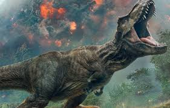
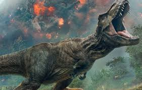

Tyranozaur Rex, często nazywany "królem dinozaurów", to jedno z najbardziej imponujących i przerażających stworzeń, jakie kiedykolwiek żyły na Ziemi. Żył on w późnej kredzie, około 68-66 milionów lat temu, na terenach Ameryki Północnej. Jego imponujące wymiary i potężna budowa czynią go jednym z najbardziej ikonicznych dinozaurów w historii.
 Tyranozaur Rex osiągał długość około 12-13 metrów i wagę dochodzącą do 8 ton, co czyniło go jednym z największych mięsożernych dinozaurów wszechczasów. Jego potężna czaszka była wyposażona w ogromne, stożkowate zęby, które mogły mieć nawet 30 centymetrów długości. Te olbrzymie szczęki i zęby pozwalały tyranozaurowi na skuteczne łapanie i miażdżenie ofiar, co czyniło go jednym z najbardziej efektywnych drapieżników w historii. Ich ogromna siła była wystarczająca, by rozdzielić mięso ofiar i nawet ich kości.

Tyranozaur Rex miał także potężny ogon i silne kończyny, które umożliwiały mu szybkie poruszanie się i skoki w czasie polowania. Jego duże, okrągłe oczy dawały mu szerokie pole widzenia, co pozwalało mu śledzić ruchy ofiar nawet z daleka. Choć potężny i przerażający, tyranozaur mógł również wykazywać pewne zachowania socjalne, co sugerują odkrycia śladów stop tyranozaurów w jednym miejscu. Niektórzy naukowcy sugerują, że mogli polować w grupach lub chociażby tolerować obecność swoich krewnych wokół jedzenia.
Tyranozaur Rex osiągał długość około 12-13 metrów i wagę dochodzącą do 8 ton, co czyniło go jednym z największych mięsożernych dinozaurów wszechczasów. Jego potężna czaszka była wyposażona w ogromne, stożkowate zęby, które mogły mieć nawet 30 centymetrów długości. Te olbrzymie szczęki i zęby pozwalały tyranozaurowi na skuteczne łapanie i miażdżenie ofiar, co czyniło go jednym z najbardziej efektywnych drapieżników w historii. Ich ogromna siła była wystarczająca, by rozdzielić mięso ofiar i nawet ich kości.

Tyranozaur Rex miał także potężny ogon i silne kończyny, które umożliwiały mu szybkie poruszanie się i skoki w czasie polowania. Jego duże, okrągłe oczy dawały mu szerokie pole widzenia, co pozwalało mu śledzić ruchy ofiar nawet z daleka. Choć potężny i przerażający, tyranozaur mógł również wykazywać pewne zachowania socjalne, co sugerują odkrycia śladów stop tyranozaurów w jednym miejscu. Niektórzy naukowcy sugerują, że mogli polować w grupach lub chociażby tolerować obecność swoich krewnych wokół jedzenia.

Adres: Zwoleń Radosna 26-700
Kontakt: nr. 797 715 111
email: jurrasicpark@gmail.com
Godziny otwarcia